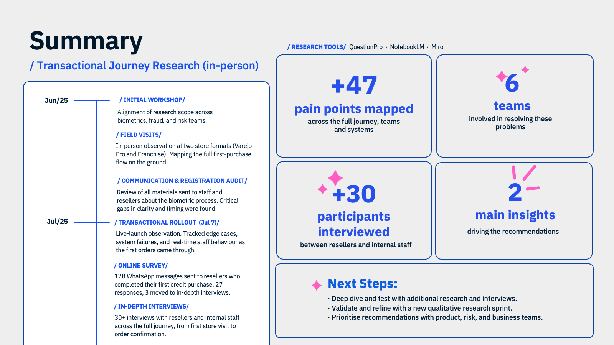
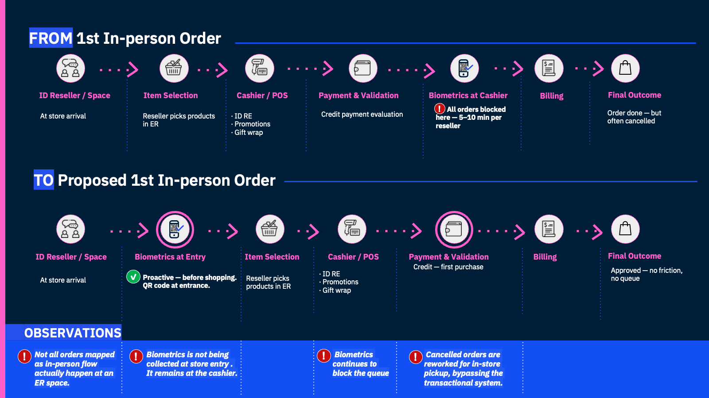
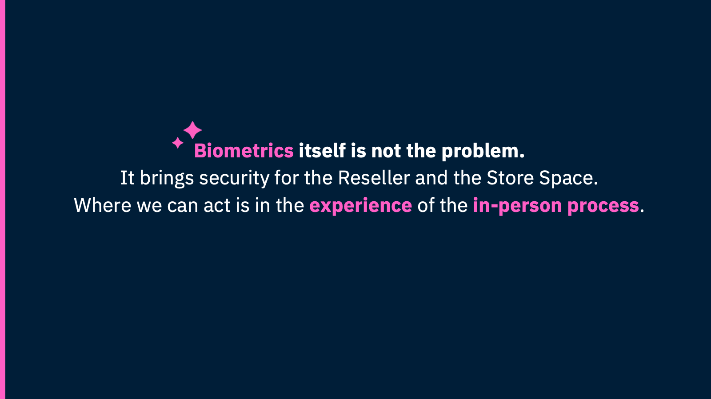
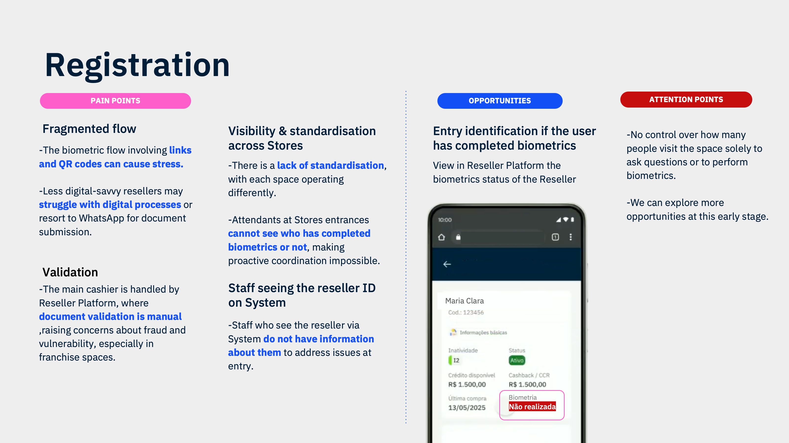
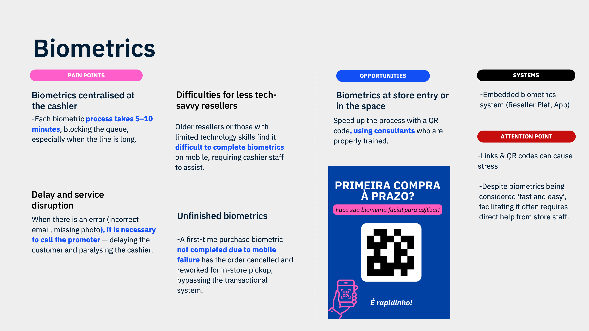
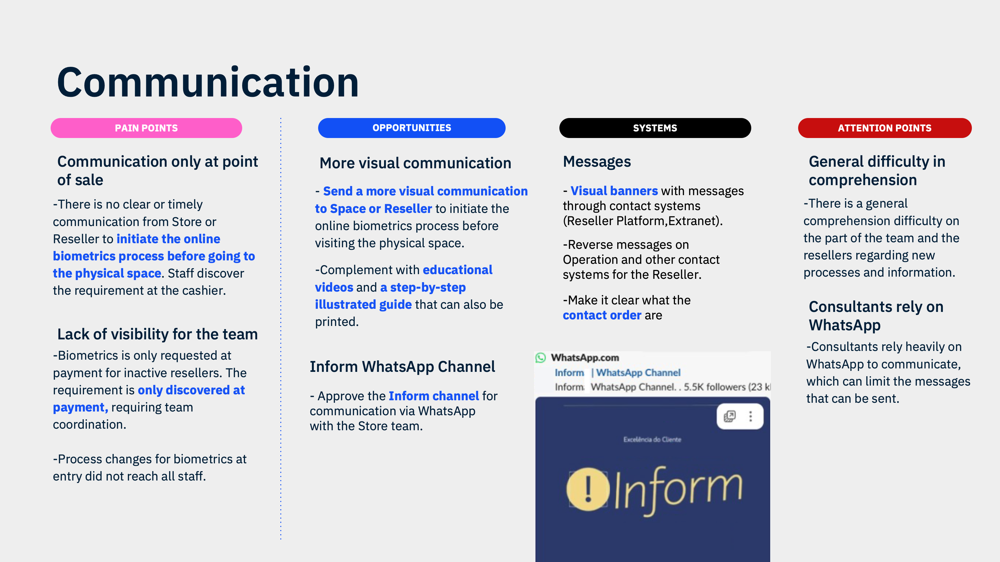

A large direct-sales company introduced biometric anti-fraud validation for resellers' first in-person credit purchase. The process was breaking queues, cancelling orders, and contradicting the brand's core promise of enchantment. Working as the product designer on this project, I ran the full research cycle — 6 teams, 12 systems, two months of field work — and the two directions I surfaced became the leading brief for the next cycle.

Context
The company's physical reseller spaces operate on a philosophy of enchantment, the first visit should feel like a gift, not a bureaucratic checkpoint. When a new transactional strategy introduced biometric facial validation as a requirement for first credit purchases, the anti-fraud logic was sound. But the implementation created the opposite of enchantment: queues, cancelled orders, frustrated resellers, and staff pulled away from the sales floor.
My Role
Working as the product designer on this project, I took on the full research scope: mapping a multi-channel journey that touched 12 platforms and required alignment across Risk, Fraud, VD+, Experience, and Motor teams. The brief was to understand what was actually happening, present structured findings, and recommend where to act. The interface artifacts in this case — including the mobile flow explorations — are my design work.

Before: biometrics at the cashier, blocking every order. After: biometrics at store entry, clearing the flow.
Research Approach
The complexity of the problem required mixing methods, no single approach would have surfaced the full picture. I built the research plan to cover the journey from every angle: the process as designed, the process as lived in the store, and the process as experienced by the reseller.
01
Alignment workshop
Cross-team session with Risk, Motor, Fraud, VD+ and Experience to map systems and surface known pain points before fieldwork.
02
Field visits
In-person observation at two store formats (Varejo Pró and Franchise), mapping the full first-purchase flow on the ground.
03
Communication audit
Reviewed all materials sent to staff and resellers about the biometric process. Found critical gaps in clarity and timing.
04
Rollout observation
Observed the live launch on July 7. Tracked edge cases, system failures, and real-time staff behaviour as the first orders came through.
05
Online survey
178 WhatsApp messages sent to resellers who completed their first credit purchase. 27 responses, 3 moved to in-depth interviews.
06
In-depth interviews
30+ interviews with resellers and internal staff across the journey, from first store visit to order confirmation.

The central reframe: biometrics is not the problem. The in-person process experience is.
47 Pain Points, 3 Root Areas
The pain points clustered into three root areas, each with its own actors, systems, and failure modes. Each area was delivered with identified opportunities and systems involved.

01. Registration: fragmented flow, no standardisation, staff with no proactive visibility

02. Biometrics: 5–10 min per reseller at the cashier, blocking queues and cancelling orders

03. Communication: staff learning about requirements at payment, not before the reseller arrived
Systems Involved
One of the defining challenges of this research was that no single team owned the full journey. The biometric anti-fraud flow crossed 12 interconnected systems, each with a different owner, a different roadmap, and a different definition of "done." The research had to speak to all of them at once.
Recommendations
The research closed with a prioritised set of recommendations structured by effort and potential impact. The core reframe: move biometrics from the cashier to store entry, before item selection begins. This single shift resolves the queue problem, eliminates the order cancellation loop, and aligns the process with the enchantment philosophy without removing any anti-fraud protection.
Proactive collection at arrival, before shopping begins, eliminates the cashier bottleneck entirely. A QR code or visual prompt at the entrance starts the process while the reseller is still relaxed and unhurried. This single shift resolves the queue problem, eliminates the order cancellation loop, and aligns the process with the brand's enchantment philosophy — without removing any anti-fraud protection.
Staff needed to see, before a reseller reached the cashier, whether biometrics had been completed. Adding a status flag to the reseller profile in the store dashboard would enable proactive intervention instead of reactive crisis management.
Replace text-heavy process updates with visual, step-by-step materials that work both digitally and printed. Communicate the biometric requirement before the reseller arrives at the store, not at the cashier. Staff learning about a requirement at the moment of payment — rather than before the reseller walked in — was one of the most consistent failure points across all field visits.
The online and in-person risk policies were identical, but the contexts are fundamentally different. A policy built for digital anonymous transactions was being applied to a supervised, relationship-based physical environment. The recommendation: work with the Risk team to create a separate in-person transactional rule set.
What the Research Changed
After presenting the findings, the team made a deliberate call: do not redesign the onboarding flow. Not because the problem was ignored, but because the research showed that the onboarding itself was not the primary pain for resellers. The friction lived elsewhere. That decision, grounded in evidence rather than assumption, is what the two months of fieldwork made possible. Preventing the wrong investment is an outcome too.
From Findings to Direction
Following the research presentation, I collaborated with the UX research team on a service blueprint mapping the full journey across touchpoints, actors, and systems. The blueprint surfaced where intervention would have the most leverage. My primary input: move biometrics into the app, shifting the requirement from a physical, staff-dependent moment to something resellers could complete on their own time, before arriving at the store. That became the leading direction for the next cycle — and the research had done its job: it changed the question the team was asking.
Key Learnings